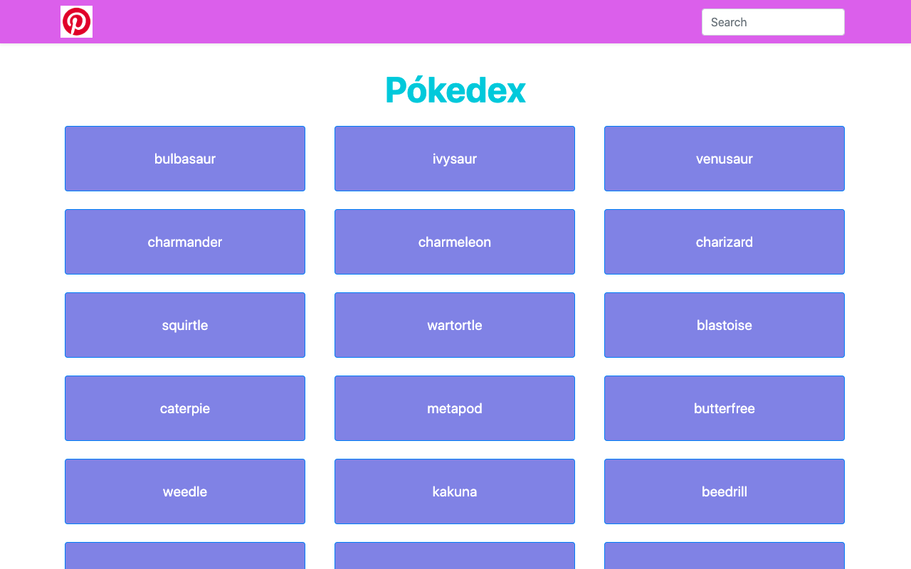

Pokedex
Project Description
Pokedek is a small web application with HTML, CSS, and JavaScript that loads data from an external API.
When user click on on the Pokemon button ,can see the details of pokemon. And user can search specific
pokemon with pokemon name in serach field.
Developing the Pokedex application improved my skills in API integration, asynchronous operations, and
dynamic data management.
I enhanced my ability to create responsive layouts with Bootstrap and learned to use complex UI patterns
like modals for detailed
information display. Additionally, I optimized user experience with features such as search, and filter
functionalities.
The project also highlighted the importance of code quality, as I used ESLint for linting to maintain a
error free code.
Technologies Used
Javascript,HTML,CSS and Bootstrap framework.
Back